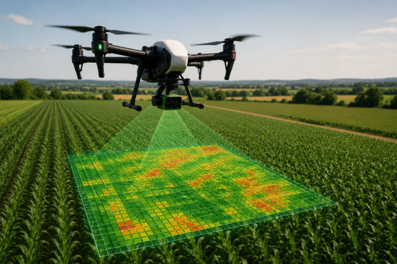
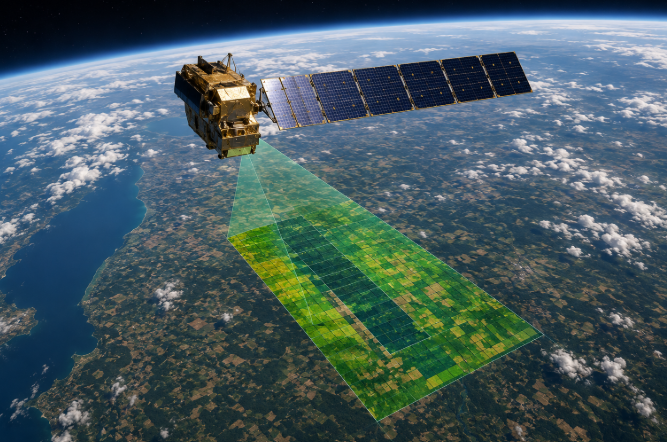
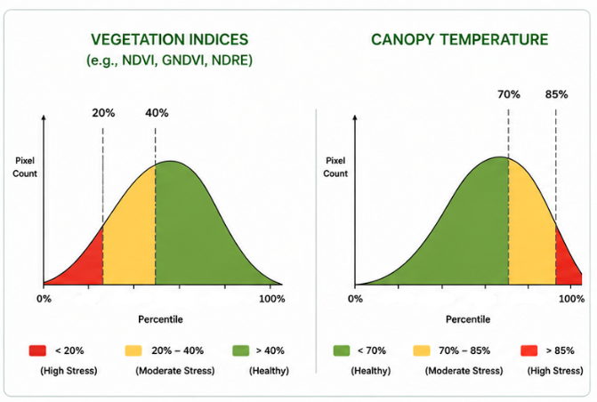
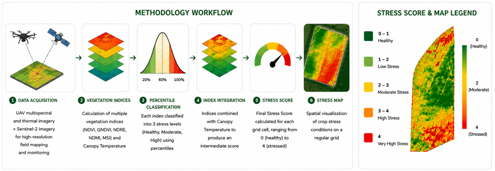

Remote Sensing Platforms
Crop monitoring combines UAV multispectral imagery and Sentinel 2 satellite observations. While UAV surveys provide centimetre-level spatial resolution for detailed within-field analysis, Sentinel 2 complements these acquisitions with frequent observations suitable for seasonal monitoring.

DJI UAV

Sentinel 2 Constellation
| Characteristic | UAV | Sentinel 2 |
|---|---|---|
| Spatial Resolution | ≈ 2–5 cm | 10–20 m |
| Temporal Resolution | On Demand | 5 Days |
| Spectral Bands | RGB + Multispectral + Thermal | 13 Bands |
| Main Application | Detailed Field Analysis | Seasonal Monitoring |
UAV imagery provides very high spatial resolution for local crop assessment, whereas Sentinel 2 enables continuous monitoring of crop development throughout the growing season. Combining both platforms offers a comprehensive view of crop conditions across different spatial and temporal scales.
VEGETATION INDICES
Vegetation indices combine different spectral bands to quantify crop vigor, chlorophyll concentration, moisture content and thermal conditions. Each indicator highlights a specific aspect of plant physiology and contributes to a comprehensive evaluation of crop health.
| Index | Formula | Typical Range | Main Application | Healthy Value |
|---|---|---|---|---|
| NDVI Normalized Difference Vegetation Index | (NIR − Red) / (NIR + Red) | -1 to 1 | General crop vigor | High (≈ 0.6 – 0.9) |
| GNDVI Green Normalized Difference Vegetation Index | (NIR − Green) / (NIR + Green) | -1 to 1 | Chlorophyll & nitrogen status | High (≈ 0.5 – 0.8) |
| NDRE Normalized Difference Red Edge Index | (NIR − Red Edge) / (NIR + Red Edge) | -1 to 1 | Mature canopy monitoring | High (≈ 0.3 – 0.6) |
| NDMI Normalized Difference Moisture Index | (NIR − SWIR) / (NIR + SWIR) | -1 to 1 | Vegetation water content | High (≈ 0.2 – 0.6) |
| MSI Moisture Stress Index | SWIR / NIR | > 0 | Moisture stress detection | Low (< 1) |
| Canopy Temperature Thermal Infrared Measurement | Thermal Camera (°C) | Variable | Thermal crop monitoring | Low (Cool canopy) |
Since no individual indicator fully describes crop conditions, vegetation indices are interpreted together with canopy temperature. Their complementary information enables a more reliable evaluation of crop health than any single variable alone.
STRESS ASSESSMENT
Crop stress is derived from the statistical distribution of vegetation indices and canopy temperature for each individual survey. Percentile-based thresholds automatically adapt to temporal variability, ensuring a robust classification that remains comparable across different acquisition dates and environmental conditions.

Each vegetation index and canopy temperature layer is first analysed independently. Rather than using fixed thresholds, MyCrop classifies each variable according to its percentile distribution, allowing the method to automatically adapt to the conditions of every survey. For vegetation indices, lower percentile values generally indicate reduced vegetation vigor and therefore higher stress. In contrast, higher canopy temperatures are associated with water deficit and thermal stress. The classified variables are then combined to obtain a single Stress Score for every grid cell.
FROM INDICES TO STRESS MAPS
Vegetation indices and canopy temperature provide complementary information about crop vigor, chlorophyll content, moisture status and thermal conditions. By integrating these variables through percentile-based classification, MyCrop transforms complex remote sensing measurements into a single and intuitive Stress Score.

The resulting stress maps summarize thousands of observations into an easy-to-interpret product, allowing users to identify critical areas, compare surveys acquired at different dates and support precision agriculture decisions throughout the growing season.